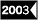
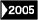
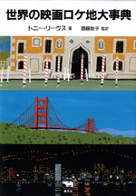
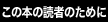
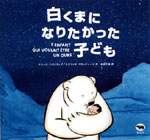
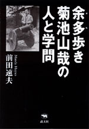
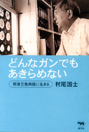
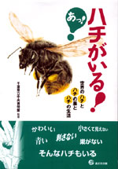

|  |  |
|

|
映画・旅行 | ||||||
| 世界の映画ロケ地大事典 | |||||||
| トニー・リーヴス 齋藤敦子監訳 | |||||||
| A5判 848頁 | |||||||
| 定価7980円(本体7600円） | |||||||
| 4-7949-6628-8 C0074 | |||||||
| カリフォルニアで『風と共に去りぬ』の舞台裏を訪ねる。NZで『ロード・オブ・ザ・リング』を、チュニジアで『スター・ウォーズ』を満喫！ハリウッド大作からヨーロッパの隠れた名作まで1600本以上の撮影現場が1冊でわかる。DVD発売元情報と、地名別に撮られた映画がわかる索引つき。 | |||||||
|  |
|

|
絵本 | ||||||
| 白くまになりたかった子ども | |||||||
| ヤニック・ハストラップ、ステファヌ・フラッティーニ 永田千奈訳 | |||||||
| A4変型判 38頁 | |||||||
| 定価1680円（本体1600円） | |||||||
| 4-7949-6627-X C8798 | |||||||
| かつて、人間とシロクマは、同じことばをしゃべっていた──1年の大半を雪と氷で閉ざされた世界ですごす、イヌイットのいいつたえをベースにした、神秘的なおとぎ話。シロクマの愛情をうけて育った少年が、人間として生きるか、シロクマとして生きるか、葛藤をくり広げます。少年の願いが自然の摂理を超えて、新しい世界をきりひらくまで……。今夏公開予定の映画は二〇〇三年ベルリン映画祭キンダーフィルムフェスト準グランプリ受賞。 | |||||||
 |
民俗学・評伝 |
| 余多歩き 菊池山哉の人と学問 | |
| 前田速夫 | |
| 四六判 368頁 | |
| 定価2415円（本体2300円） | |
| 4-7949-6629-6 C0095 | |
| 東京市役所の土木技師をしながら全国の被差別部落とその人々に信仰されてきた白山神社をくまなく歩き、前人未踏の学問を残した民俗学者・菊池山哉（明治23〜昭和41年）。正史が抹殺し隠蔽してきた歴史と民俗の暗部を踏査した民間学者の「横すべり学問人生」を描く初の本格評伝。実地検証のすえ大胆な仮説を展開した「単独者」の心意気が迫る。 |
 |
ノンフィクション・がん | ||||||
| どんなガンでもあきらめない 帯津三敬病院に生きる |
|||||||
| 村尾国士 | |||||||
| 四六判 328頁 | |||||||
| 定価2730円（本体2600円） | |||||||
| 4-7949- 6625-3 C0047 | |||||||
| 見放された末期ガン患者の治療に奇跡を起こしている帯津三敬病院の全体像を描いた渾身のノンフィクション。西洋医学の限界を超えるホリスティック医学を駆使することで、抗ガン戦線のカリスマになった帯津良一名誉院長への密着取材や、死の淵で明日を生きるために闘う末期ガン患者への克明なインタビューを通して、帯津三敬病院の奇跡の秘密に迫っていく。 | |||||||
|
晶文社出版の本 TEL.03-5688-6881 |
|
 |
生物・自然 |
| あっ！ ハチがいる！ 世界のハチとハチの巣とハチの生活 |
|
| 千葉県立中央博物館監修 | |
| A5判 144頁 | |
| 定価1680円（本体1600円） | |
| 4-7949-7610-0 C0045 | |
| ハチといえば「刺す」? 「怖い」? 本当は刺さないハチのほうが多いし、1ミリ以下の小さなハチや巨大で精巧な巣を作るハチ、土の中に壺型の巣を作るハチ、巣をもたないハチ、青く輝く美しいハチ…、世界には約12万種ものハチがいるのです。働きバチと女王バチの違いとは？ 博物館の展示をめぐるかのように、ハチの世界が見えてくる本です。 |